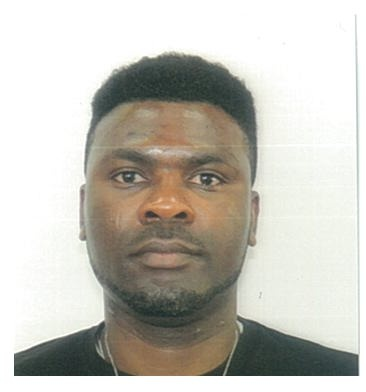
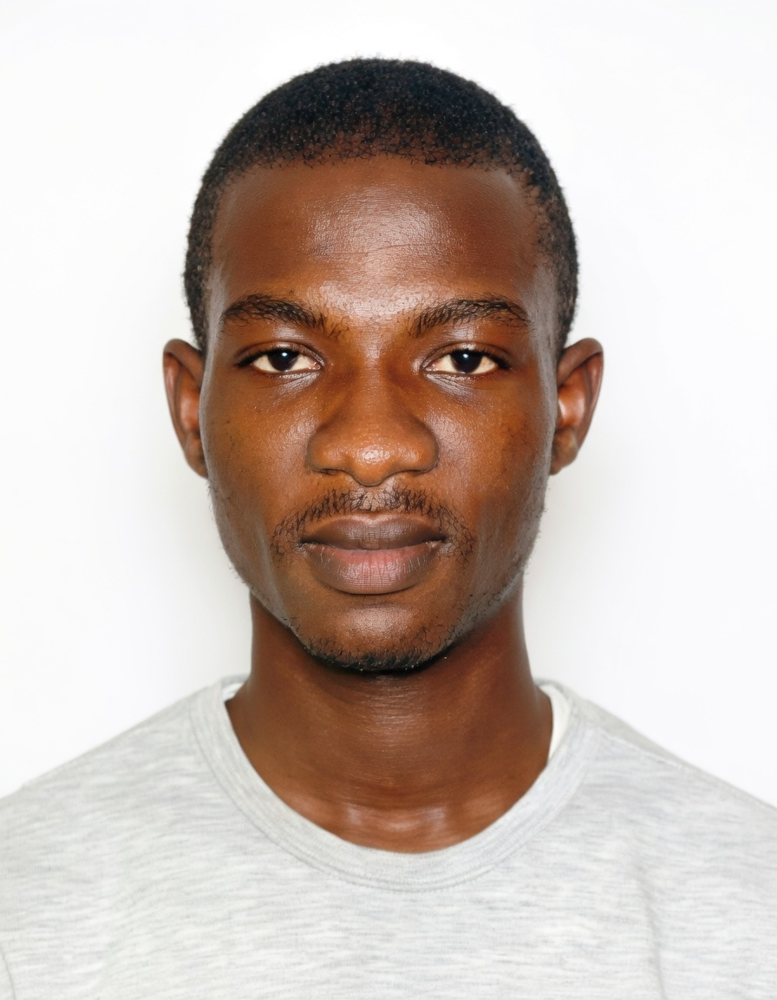
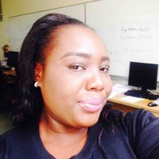

Members
The WOCCOM Research Group consists of dedicated researchers and academics from various institutions.
Prof. Sicelo Goqo
 Associate Professor
Associate Professor
School of Agriculture and Science, University of KwaZulu-Natal
Research Interests: Numerical Analysis, Dynamical Systems, Computational Fluid Dynamics, Mathematical Modelling, Computational Methods, Spectral-based Methods, Block-Hybrid Methods, Finite Difference Methods, Optimization, Biological Modelling, Neural Networks on Differential Equations.
Dr. Olumuyiwa Otegbeye
Senior LecturerSchool of Computer Science and Applied Mathematics, University of the Witwatersrand, Johannesburg
Research Interests: Numerical Analysis, Dynamical Systems, Computational Fluid Dynamics, Mathematical Modelling, Computational Methods, Spectral-based Methods, Block-Hybrid Methods, Finite Difference Methods, Optimization, Biological Modelling, Neural Networks on Differential Equations.
Dr. Shina Daniel Oloniiju

Senior LecturerDepartment of Mathematics, Rhodes University
Research Interests: Numerical Analysis, Dynamical Systems, Computational Fluid Dynamics, Mathematical Modelling, Computational Methods, Spectral-based Methods, Block-Hybrid Methods, Finite Difference Methods, Optimization, Biological Modelling, Neural Networks on Differential Equations.
Dr. Yusuf Olatunji Tijani

LecturerSchool of Computer Science and Applied Mathematics, University of the Witwatersrand
Research Interests: Numerical Analysis, Dynamical Systems, Computational Fluid Dynamics, Mathematical Modelling, Computational Methods, Spectral-based Methods, Block-Hybrid Methods, Finite Difference Methods, Optimization, Biological Modelling, Neural Networks on Differential Equations.
Dr. Vusi Magagula
 Senior Lecturer
Senior Lecturer
Department of Mathematics, University of Eswatini
Research Interests: Numerical Analysis, Dynamical Systems, Computational Fluid Dynamics, Mathematical Modelling, Computational Methods, Spectral-based Methods, Block-Hybrid Methods, Finite Difference Methods, Optimization, Biological Modelling, Neural Networks on Differential Equations.
Dr. Hloniphile Sithole-Mthethwa
 Senior Lecturer
Senior Lecturer
School of Agriculture and Science, University of KwaZulu-Natal
Research Interests: Numerical Analysis, Dynamical Systems, Computational Fluid Dynamics, Mathematical Modelling, Computational Methods, Spectral-based Methods, Block-Hybrid Methods, Finite Difference Methods, Optimization, Biological Modelling, Neural Networks on Differential Equations.
Dr. Titilayo Agbaje

Assistant ProfessorHouston Christian University, United States
Research Interests: Computational Methods, Spectral-based Methods, Block-Hybrid Methods, Finite Difference Methods, Optimization, Biological Modelling, Neural Networks on Differential Equations.